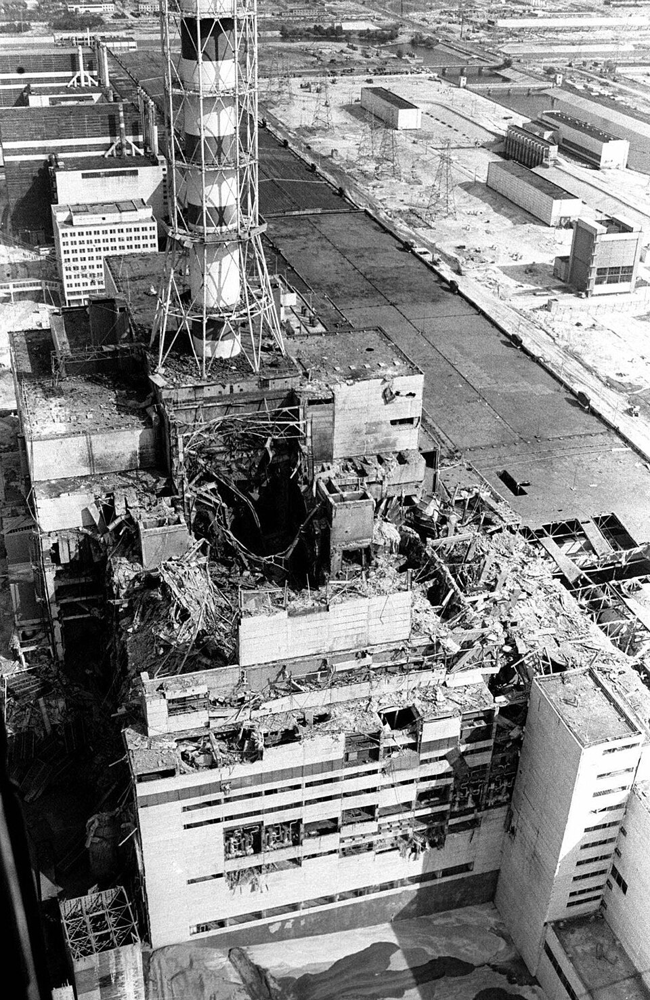

Un estallido en la central atómica de Chernóbil que Moscú se niega a explicar
Versiones que llegan de la Ucrania soviética hablan de una explosión ocurrida esta madrugada en el reactor 4 de la central, junto a la ciudad de Prípiat. Las autoridades guardan silencio mientras trascienden noticias de un resplandor sobre la planta y de bomberos combatiendo el fuego. Nada oficial permite medir la magnitud de lo ocurrido.

A la 1.23 de esta madrugada, según versiones que ninguna autoridad confirma pero que ganan consistencia hora tras hora, una explosión sacudió el reactor número 4 de la central atómica de Chernóbil, en la Ucrania soviética, a un centenar de kilómetros de Kiev. Quienes dicen haber visto la escena desde lejos hablan de un resplandor anaranjado sobre la planta y de una columna de humo que subía recta en la noche. La central se alza junto a Prípiat, una ciudad nueva de unos cincuenta mil habitantes, levantada para los técnicos y obreros del complejo. La radio soviética, a la hora de cerrar esta edición, no ha dicho una sola palabra.
Lo poco que trasciende dibuja un cuadro inquietante. Se cuenta que los bomberos de Prípiat y de Chernóbil acudieron en minutos y treparon al techo de la sala de máquinas para atacar los focos de incendio, sin más escudo que sus uniformes de faena, y que varios fueron llevados al hospital antes del amanecer, descompuestos. Habría grafito ardiendo entre los escombros, un detalle que los especialistas occidentales consideran gravísimo si se confirma, porque supondría que el corazón mismo del reactor está abierto al cielo. En Prípiat, a menos de tres kilómetros, la vida siguió hoy su curso; se dice, sin embargo, que se prepara una evacuación.
La central de Chernóbil, que lleva el nombre de Lenin, es una de las mayores de la Unión Soviética: cuatro reactores de mil megavatios y otros dos en construcción, orgullo del programa atómico que el Kremlin exhibe como prueba de su pujanza técnica. El poder soviético jamás ha admitido un accidente nuclear en su territorio, aunque en Occidente circulan desde hace años rumores sobre un desastre ocultado en los Urales hace tres décadas. La doctrina oficial sostiene que los reactores soviéticos son seguros por diseño y que la técnica socialista no conoce catástrofes. Esta madrugada, esa doctrina ha quedado pendiente de un hilo de silencio.
El silencio, en estos casos, también informa. Las llamadas telefónicas a Kiev se cortan o no se completan; los corresponsales extranjeros en Moscú chocan con evasivas, y ningún vocero acepta siquiera pronunciar la palabra Chernóbil. Pero hay algo que ninguna censura administra: el viento. La radiactividad, si se liberó en la escala que se teme, no conoce fronteras, y en los países escandinavos, hacia donde soplan estos días los vientos del sur, los contadores de las propias centrales podrían ser los primeros en delatar lo que Moscú calla. Más de un físico europeo, consultado esta noche, confesó estar mirando sus instrumentos con una atención nueva.
Este diario escribe a oscuras, y lo declara: no sabe cuántas víctimas hay en Chernóbil, ni qué cantidad de materia radiactiva se ha liberado, ni si Prípiat sigue siendo habitable. Sabe, en cambio, lo que huele: que la dimensión de lo ocurrido es mayor que la que el hermetismo oficial insinúa, porque los estados no callan con tanto esmero las desgracias pequeñas. El átomo pacífico, que prometía luz ilimitada para las ciudades, muestra esta madrugada su reverso en una llanura de Ucrania. Cuando Moscú hable, si habla, habrá que comparar sus palabras con lo que el viento haya contado antes a los instrumentos de Europa.